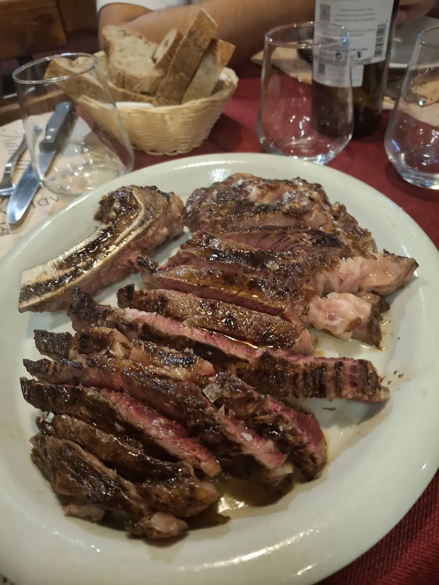
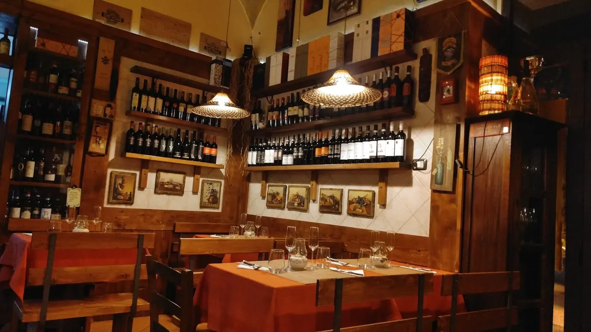

Wine bar e steakhouse a Marigliano
WINE BAR|FELEPPA
Carne di qualità, vini scelti e un locale piccolo e intimo a Marigliano: lo raccontano i clienti nelle recensioni.
4,6 voto Google
161recensioni Google
Servizi
Cosa facciamo
- 01
La carne
«La carne è la vera protagonista»: dalle recensioni.
- 02
I vini
«la ricercata selezione di vini»: dalle recensioni.
- 03
Su misura
«attentissimo ai gusti personali, alle intolleranze»: dalle recensioni.
Dalla categoria della scheda Google e dalle recensioni dei clienti.

Le nostre foto
Dentro Feleppa
Foto pubblicate sulla scheda Google dell'attività dal titolare e dai clienti. Toccate una foto per vederla a tutto schermo.
Recensioni Google
4,6 su 5 da 161 clienti
«Salve. Non si può spiegare il gusto, il sapore,la prelibatezza. Lo si può capire solo mangiando. Complimenti a Enzo e al suo staff.»
«Per questa esperienza, non posso che dare 5 stelle, e anche di più! Siamo stati in questo gioiellino del gusto su consiglio di alcuni amici della zona, e siamo rimasti piacevolmente sorpresi: ogni pietanza ha superato ampiamente le aspettative! Se volete sentirvi coccolati e mangiare prodotti di qualità, lasciatevi guidare dalla maestria di Enzo, il proprietario, che vi cucirà un’esperienza culinaria su misura: attentissimo ai gusti personali, alle intolleranze, sa bilanciare come un alchimista pietanze e vini. Non perdetevi la carne: noi abbiamo provato una Charolais super morbida, che si taglia con la forchetta! Grazie Enzo per averci fatto sentire a casa.»
Tutte le recensioni su Google
Recensioni riportate senza modifiche, nomi abbreviati.
Orari
Aperti 4 giorni su 7
| Lunedì | Chiuso |
|---|---|
| Martedì | Chiuso |
| Mercoledì | 20:00–01:00 |
| Giovedì | 20:00–01:00 |
| Venerdì | 20:00–01:00 |
| Sabato | 20:00–01:00 |
| Domenica | Chiuso |
Orari della scheda Google: nei festivi possono cambiare, chiamate per conferma.